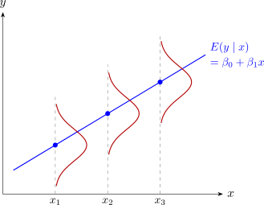

2.1 The model and its assumptions
Suppose we have \(n\) pairs of observations \((x_1,y_1), (x_2,y_2), \dots , (x_n,y_n)\). From here on we follow the usual convention and write the sample values in lower case: the \(x_i\) are treated as fixed, known constants (we chose them, or we condition on them), and each \(y_i\) is the value taken by a random variable. The model for the sample is \begin {equation} \label {eq:slr-sample} y_i = \beta _0 + \beta _1 x_i + \varepsilon _i, \qquad i = 1, 2, \dots , n. \end {equation}
We now make some basic assumptions on the errors \(\varepsilon _i\):
- A1.
- \(E(\varepsilon _i) = 0\) for every \(i\): the errors average out to zero;
- A2.
- \(\operatorname {Var}(\varepsilon _i) = \sigma ^2\) for every \(i\): the spread is the same at every \(x\) (constant variance, or homoscedasticity);
- A3.
- \(\operatorname {Cov}(\varepsilon _i, \varepsilon _j) = 0\) for \(i \neq j\): the errors are uncorrelated;
- A4.
- \(\varepsilon _i \sim N(0, \sigma ^2)\): the errors are normally distributed.
Assumptions A1–A3 are all that least-squares estimation needs, and the results of the next four subsections rest on them alone. The normality assumption A4 is needed for tests and confidence intervals, from Subsection 2.7 on. Together, A3 and A4 make the errors independent, since uncorrelated normal variables are independent.
Theorem 2.1.1. Under A1–A3, for each \(i\), \[ E(y_i) = \beta _0 + \beta _1 x_i, \qquad \operatorname {Var}(y_i) = \sigma ^2, \qquad \operatorname {Cov}(y_i, y_j) = 0 \quad (i \neq j). \]
Proof. Since \(\beta _0 + \beta _1 x_i\) is a constant, \(E(y_i) = \beta _0 + \beta _1 x_i + E(\varepsilon _i) = \beta _0 + \beta _1 x_i\) by A1. Adding a constant does not change a variance or a covariance, so \(\operatorname {Var}(y_i) = \operatorname {Var}(\varepsilon _i) = \sigma ^2\) by A2 and \(\operatorname {Cov}(y_i,y_j) = \operatorname {Cov}(\varepsilon _i,\varepsilon _j) = 0\) by A3. □
So the line \(\beta _0 + \beta _1 x\) is the line of means: at each value of \(x\), the response is scattered about the point on the line, with the same spread \(\sigma \) everywhere. With A4 the scatter is normal, as in Figure 2.

Questions on this section
Stuck on something here? Ask below and it stays attached to this topic.